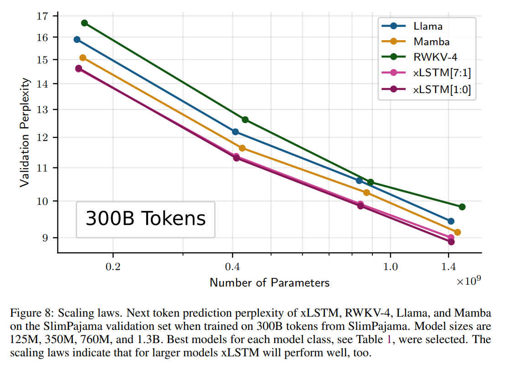
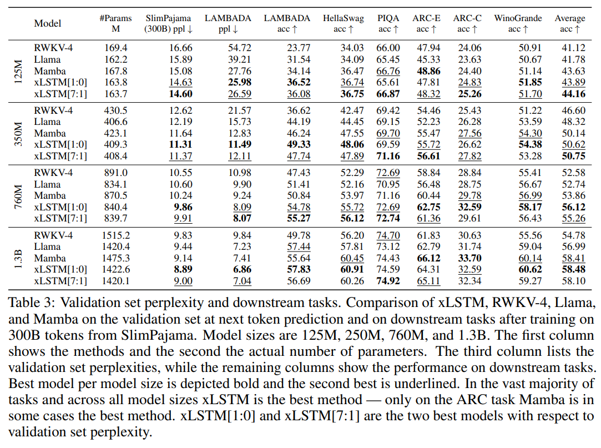
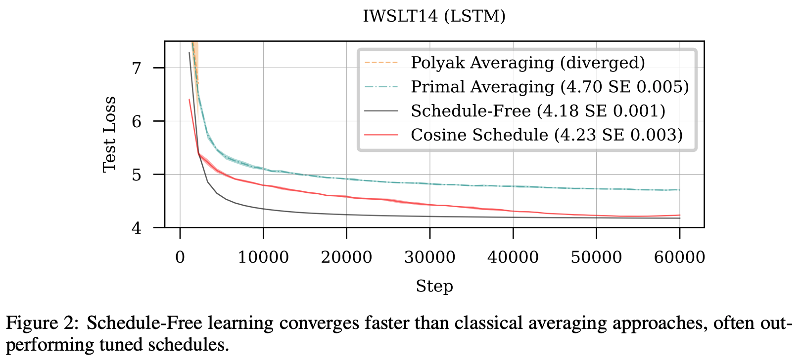
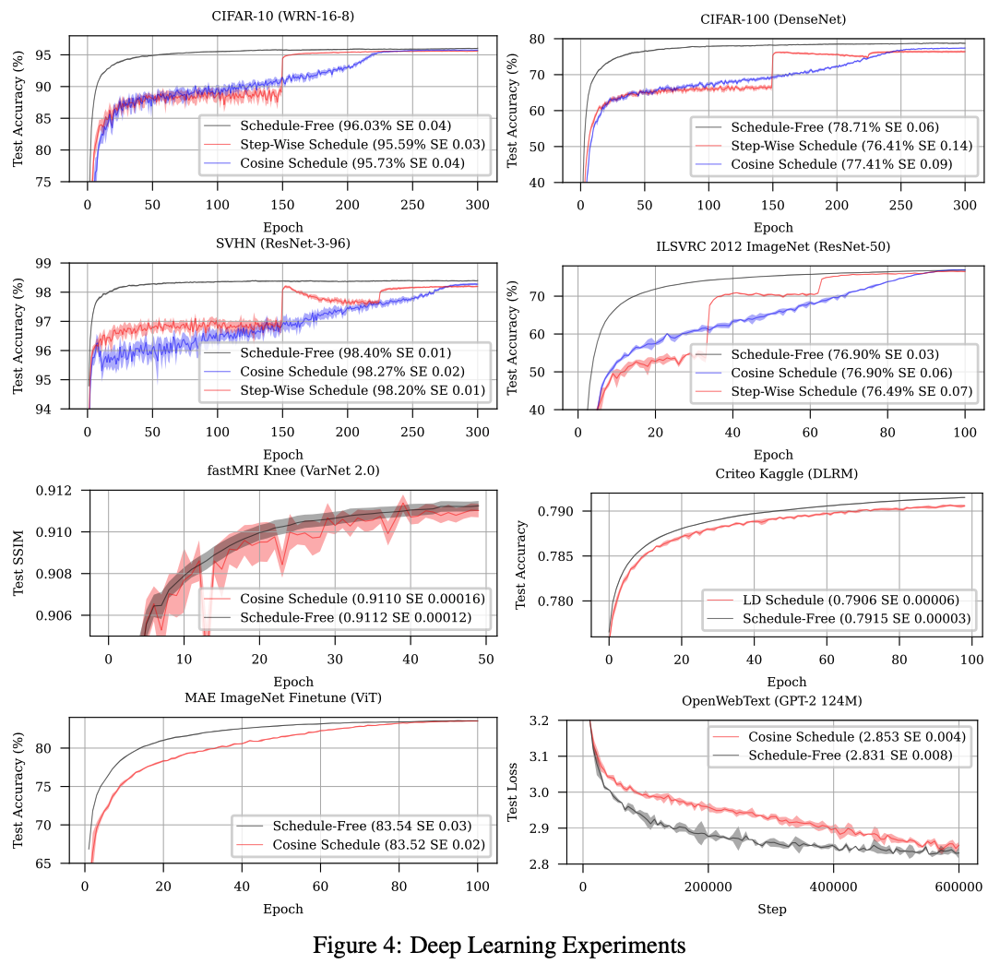
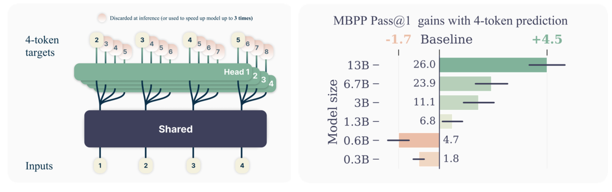
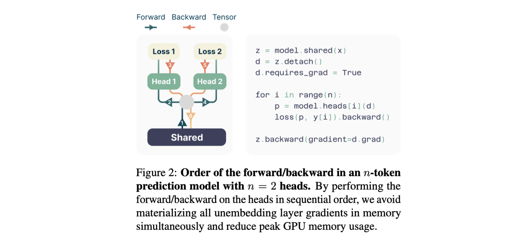

May Papers: xLSTM, Schedule-Free Optimizers, and Multi-token prediction
May is always an eventful time of year for ML researchers, with final ICML paper decisions and ICLR taking place in early May, and NeurIPS submission deadlines closing the month. As ever, arXiv submissions continue to grow!
This month we take a look at three papers exploring new techniques to challenge the mainstream large-scale pretraining setup: transformers trained with next-token prediction optimized with Adam/AdamW.
The first paper, xLSTM, is a long-awaited deep dive into Sepp Hochreiter's new, improved RNN architecture, nearly 30 years after the original LSTM was published. Drawing inspiration from linear attention, the authors demonstrate scaling comparable to transformers up to 1.3B parameters.
We then take a look at Schedule-Free optimizers from a team at FAIR. The authors propose a new class of optimizers that require no finicky learning rate scheduling. By replacing gradient momentum terms in standard optimizers with parameter averages, the authors show faster convergence than scheduled optimizers on a wide battery of small-scale deep learning tasks.
A further paper from FAIR extends the standard pretraining setup for large language models from next-token to multi-token prediction. This particularly seems to improve performance for larger models and offers a natural choice of model to use for speculative sampling to accelerate inference.
We hope you enjoy this month's papers as much as we did! If you have thoughts or questions, please reach out to us at @GCResearchTeam.
xLSTM: Extended Long Short-Term Memory
The key idea
Recurrent neural networks based on Long Short-Term Memory units were the backbone of NLP models before the advent of the now-ubiquitous transformer. This work seeks to close the gap between LSTM and transformer in the crucial model-scaling regime of LLMs. They do this by extending the LSTM in two ways to create sLSTM and mLSTM, then incorporating these layers into a deep residual architecture, called xLSTM.

Their method
We'll focus on the mLSTM variant, as the sLSTM variant is omitted from many of the best-performing models in their results. I think the best way to understand the architecture is to stare at a wall of maths for a while:
![mLSTM definition. Define input, forget and output gates as linear functions of the input + bias and activation (the activation is exponential for the input gate, sigmoid for the output and either exponential or sigmoid for the output gate). Define query, key and value as linear functions of the input. The cell state is updated from forget gate times previous plus input gate times the value-key outer product. There is also a normaliser that is similar but without the value. The output is output gate times the cell-query inner product divided by the maximum of normaliser-query inner product and 1.](../potm/2024/05/xlstm/mlstm_definition.png)
To give an intuition for this, there's:
- Inputs \(\mathbf{x}\) and parameters \(\mathbf{W_{q,k,v,o}}\), \(\mathbf{b_{q,k,v,o}}\), \(\mathbf{w_{i,f}}\), \(\mathbf{b_{i,f}}\).
- Six linear + activation ops, depending only on the inputs: \(\textbf{q}, \textbf{k}, \textbf{v}, i, f, \textbf{o}\). The \(f\) (forget) and \(\textbf{o}\) (output) gates have sigmoid activation, giving outputs in the range \([0, 1]\), but \(i\) (input) has an exponential activation. \(\textbf{q}, \textbf{k}, \textbf{v}\) are linear.
- A "cell" \(\textbf{C}\): a decayed and weighted sum of \(\textbf{v} \textbf{k}^\top\) (which I'll call KV mapping) over time. At each step, the state is decayed according to the forget gate \(f\) and the KV mapping is weighted according to the input gate \(i\). The cell maps queries to values by matching them against keys.
- A normalizer \(\textbf{n}\): similar, but sums just \(\textbf{k}\) instead of KV mapping.
- An output \(\textbf{o}\), the inner product of query \(\textbf{q}\) and cell, divided by the magnitude of the inner product of \(\textbf{q}\) and normaliser, and multiplied by the output gate.
Like softmax dot product self-attention, this involves a normalised sum of exponentials; a key difference is that the input to exp depends only on the "source" (key, value), not on the "target" (query). It bears some similarities to linear attention, Mamba and RWKV, permitting a parallel scan over the inputs since time dependency is linear. It retains the RNN's advantage of summarising the context in a fixed-size representation, \(\textbf{C}\), for efficient autoregressive inference.
In the xLSTM architecture, this is used in a custom residual block that performs positionwise up projection before the multi-headed mLSTM.
Results
Downstream results for LLMs of up to 1.3B parameters, trained on 300B SlimPajama tokens:

(I haven't been able to confirm if these are zero-shot or few-shot results.) Here, xLSTM[1:0] uses only the mLSTM layer described above, while xLSTM[7:1] includes 7 mLSTM layers per 1 sLSTM layer. These results appear to demonstrate the sufficiency of mLSTM for LLMs. The paper also includes a helpful set of ablations and synthetic tasks.
Takeaways
It's refreshing to see non-transformer LLMs trained at scale, and that the xLSTM architecture appears competitive with transformers. More research could help us understand the benefits of these alternatives, and whether the scaling properties are robust.
The Road Less Scheduled
The key idea
Deep learning practitioners use often use two key hacks to make optimisation of deep neural networks work in practice:
- Learning rate schedules
- Weight averaging for evaluation.
Here the authors propose a principled approach that replaces estimates of first-order gradient moments with an averaged parameter state to adapt commonly used optimisers to avoid the need for either of these hacks with no overhead.

Their method
We'll present scheduled and schedule-free AdamW side-by-side, identify key differences, and explain how they are motivated.
Algorithm comparison
Given: * initial parameter state \(x_1\), * learning rate \(\gamma\), * weight decay \(\lambda\), * warmup steps \(T_{warmup}\), * AdamW hyperparameters (\(\beta_1\), \(\beta_2\), \(\epsilon\))
We compute:
| Scheduled AdamW | Schedule-Free AdamW |
|---|---|
| Init \(z_0 = 0\), \(v_0 = 0\) | Init \(z_1 = x_1\), \(v_0 = 0\) |
| \(\texttt{for t = 1 to T do}\) | \(\texttt{for t = 1 to T do}\) |
| 1: \(g_t = \nabla f(x_t)\) | 1: \(y_t = (1 - \beta_1)z_t + \beta_1x_t\) |
| 2: \(z_t = (1 - \beta_1)z_{t-1} + \beta_1g_t\) | 2: \(g_t = \nabla f(y_t)\) |
| 3: \(v_t = (1 - \beta_2) v_{t-1} + \beta_2g_t^2\) | 3: \(v_t = (1 - \beta_2) v_{t-1} + \beta_2g_t^2\) |
| 4: \(\hat{z}_t = z_t/(1 - \beta_1^t)\), \(\hat{v}_t = v_t/(1 - \beta_2^t)\) | 4: \(\hat{v}_t = v_t/(1 - \beta_2^t)\) |
| 5: \(\gamma_t = \gamma \textrm{min}(1, t/T_{warmup})\) | 5: \(\gamma_t = \gamma \textrm{min}(1, t/T_{warmup})\) |
| 6: | 6: \(z_{t+1} = z_t - \gamma_t g_t/(\sqrt{\hat{v}_t} + \epsilon) - \gamma_t \lambda y_t\) |
| 7: \(\alpha_t = \textrm{schedule}(t)\) | 7: \(c_{t+1} = \gamma_t^2 / \sum^t_{i=1}{\gamma_i^2}\) |
| 8: \(x_{t+1} = (1 - \alpha_t \gamma_t \lambda)x_t - \gamma_t\alpha_t \hat{z}_t/(\sqrt{\hat{v}_t} + \epsilon)\) | 8: \(x_{t+1} = (1 - c_{t+1})x_t + c_{t+1}z_{t+1}\) |
Let's go through line by line: * Initialisation: Standard scheduled AdamW initialises gradient moment variables \(z\) and \(v\) at \(0\). Schedule-free AdamW stores the second gradient moment variable \(v\), and \(z\) now represents a raw un-averaged parameter state, and is initialised to be the same as an averaged parameter state \(x_t\) * Optimizer state updates (Lines 1-4): Standard scheduled AdamW computes gradients given current parameter state \(x_t\) (Line 1) and update moments as an exponential moving average with temperatures \(\beta_1\) and \(\beta_2\) (Lines 2-3), and correct moment estimation bias (Line 4). Schedule-free AdamW first computes an interpolation \(y_t\) between the raw \(z_t\) and averaged \(x_t\) parameter state (Line 1). We then compute gradients at this interpolated point (Line 2) and update the second moment (Line 3), and correct moment estimation bias (Line 4). * Parameter state updates (Lines 5-8): Scheduled AdamW first determines learning rate coefficients given warmup and decay schedule (Lines 5-7), before applying the standard update rule using moments \(z_t\), \(v_t\) with weight decayed from \(x_t\) (Line 8). Schedule-free AdamW likewise applies a warmup to the learning rate (Line 5), then updates the non-averaged parameter state \(z_t\) using gradient estimate \(g_t\), second moment \(v_t\), and decays from interpolated weights \(y_t\) (Line 6). We then update our weighted average of parameters \(x_t\) with weights computed to discount parameters during warmup (Lines 7-8).
What motivates these changes?
Previous work by the same group illustrated a connection between learning rate schedules and Polyak-Ruppert parameter averaging, a theoretically optimal technique for ensuring convergence in stochastic optimisation. Polyak-Ruppert parameter averaging is simple to compute (effectively just line 6-8 of our schedule-free algorithm), but appears to perform worse than cosine decay schedules in practice.
The authors propose combining Polyak-Ruppert averaging with Primal averaging. In Primal averaging, we evaluate gradients at a slow moving average parameter value rather than a fast moving immediate parameter value (standard practice). Likewise, Primal averaging on its own also appears to perform worse in practice as parameters change too slowly.
The combined solution is to effectively try to get the Primal average parameters to move a bit faster, by interpolating them with a Polyak-Ruppert average. This interpolated parameter is our \(y_t\) term computed on Line 1. Given that when \(\beta_1=1\) is pure Primal averaging, and \(\beta_1=0\) is pure Polyak-Ruppert averaging, the authors' recommended \(\beta_1=0.9\) is still pretty close to Primal averaging.
Two other changes appear to be less theoretically motivated: using \(y_t\) for decaying weights (rather than \(x_t\) or \(z_t\)), and Polyak-Ruppert averaging coefficients \(c_t\) that discounts parameter states visited during learning rate warmup. Warmup-free optimisers are a step too far it seems...
Results
The authors test schedule-free optimiser on a battery of different small models of different types (Transformers, RNNs, CNNs, GNNs, Recommenders), different datasets and objective functions, In each case they show comparable convergence as carefully tuned learning rate schedules, with faster training dynamics in many cases.

Takeaways
As hacks go, learning rate schedules are an enduring one. Given the drastic effect they can have on your model performance when implemented in a training pipeline you omit them at your peril. However, they never seemed particularly well motivated other than for their empirical effect. This looks like a step in the right direction for hack-free optimisation in deep learning.
Better & Faster Large Language Models via Multi-token Prediction
The key idea
Large language models are usually trained using the next-token prediction loss. The authors propose training the model to predict multiple tokens at a time instead, while still generating a single token at a time at inference as usual. By training models up to 13B parameters in size, they show that this can lead to models with better performance, particularly at coding tasks.

Their method
In order to enable multi-token prediction, the authors propose a simple modification to the standard transformer architecture. The final output embedding is fed into \(n\) parallel output heads, each a single standard transformer layer. This effectively means that the final transformer layer is replaced by \(n\) parallel transformer layers. The outputs of each head are then passed through a shared unembedding projection, generating a probability distribution over the whole vocabulary for each head. During training, each head is then trained to predict one of the next \(n\) tokens for each training example. In order to minimise maximum memory usage during training, the forward/backward passes on each head are performed sequentially (Figure 2).

During inference, all but the output of the first head are discarded, and tokens are generated one-by-one as with the standard transformer architecture. However, multiple-token prediction can be used to speed-up inference using self-speculative decoding, i.e. by using the \(n\) generated tokens as an initial sequence draft, and validating the sequence with just the next-token head in parallel.
Results
- Improvement was only observed at scale - improvements were strongest for the largest models.
- Observed 3x speedup using speculative decoding with 7B 4-token prediction model.
- Optimal \(n\) was empirically found to be 4 for token-based models, and 8 for byte-based models.
- Unlike coding tasks, on natural language tasks the performance does degrade compared to the next-token baseline.
Takeaways
The results of the paper are promising, as they show multi-token prediction can indeed lead to improved performance at scale, particularly at coding tasks, while at the same time providing a more suitable drafting model for speculative-sampling inference. The results hint at the possible benefits of teaching the model to "plan ahead" compared to the standard next-token prediction, and may lead to exciting alternatives to the widely-adopted token-by-token generation.